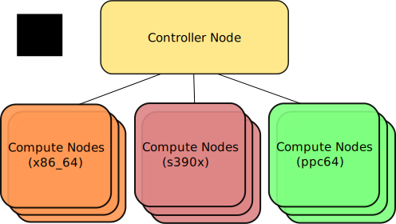

If you have an OpenStack cloud with compute nodes with different CPU architectures, then this post will give you the needed information about how to tag your guest images, which enables the Nova scheduler to find a target with the correct CPU architecture.
| Date | Change description |
|---|---|
| 2017-08-25 | The first release |
Use hw_architecture instead of architecture or cpu_arch.
OpenStack CLI:
$ openstack image set <IMG-UUID> --property hw_architecture=s390x
Ansible module os_image:
- name: "Upload bootable s390x guest image into Glance."
os_image:
name: ubuntu_z
filename: /tmp/ubuntu_s390x_disk.img
container_format: bare
disk_format: raw
properties:
hw_architecture: s390x
If that TL;DR doesn’t make sense to you, you’ll find a more exhaustive version below.
Let’s assume you have set up an OpenStack cloud with compute nodes of different CPU architectures. For example, some Intel x86 compute nodes, some IBM Z s390x compute nodes (and maybe some IBM POWER ppc64 compute nodes).
Those compute hosts with different CPU architectures need guest images which were built for those architectures. All an OpenStack user sees are the different guest images prepare by an OpenStack admin/operator. For the sake of example, maybe something like this:
1 2 3 4 5 6 7 8 9 10 11 12 | $ openstack image list
+--------------------------------------+----------+--------+
| ID | Name | Status |
+--------------------------------------+----------+--------+
| 7045d1c5-a927-4d49-9fe2-d3f63075591f | ubuntu_x | active |
| c5f206d1-d288-47fe-a67f-29a8b464bfc7 | ubuntu_p | active |
| 54c25961-d1ff-4d28-ac1a-41293ab9132b | ubuntu_z | active |
| ce7bea92-1e1d-4062-99bc-01a1db1a4b45 | rhel_x | active |
| 46ecff6d-dd7f-4907-b7b3-57d0d7290e03 | rhel_z | active |
| 4ef7df70-c5b8-43b9-9812-dfd4cd3e3c09 | suse_p | active |
| ff208726-1ae5-4b40-84d4-571e06aff8e5 | suse_z | active |
+--------------------------------------+----------+--------+
|
The openstack users usually don’t see the details of the different compute nodes. They don’t need to and shouldn’t. All they want is that this architecture specific image gets scheduled on the compute node which can fulfill their needs.
The most reasonable way I know to do this, is to add Glance image metadata,
which specifies the CPU architecture of that image so that other OpenStack
services can use that information. The one OpenStack service we need for that,
is the Nova scheduler service. Specifically one of its filters, the
ImagePropertiesFilter.
Unfortunately, the docs in Glance don’t make it that obvious which
value you have to set. You will most likely stumble upon the metadata
property architecture. The Glance docs [1] say this:
“The CPU architecture that must be supported by the hypervisor. For example, x86_64, arm, or ppc64.”
Sounds like the correct one for your use-case, right? The openstack CLI also says to use this [2].
It gets a bit more confusing when you want to use the Ansible module
os_image [3] for your Infrastructure as Code (IaC). The example there
uses cpu_arch:
1 2 3 4 5 6 7 8 9 | - os_image:
name: cirros
container_format: bare
disk_format: qcow2
state: present
filename: cirros-0.3.0-x86_64-disk.img
properties:
cpu_arch: x86_64
distro: ubuntu
|
I’m not sure if that metadata property has any effect anywhere. It hadn’t when I tested the Nova scheduling with it. A discussion on the OpenStack mailing list tried to find actions how to resolve this [4].
Long story short, I don’t know the history of how it happened, but the Nova
scheduler filter ImagePropertiesFilter which we want to use, needs the
property to be named hw_architecture [5].
Apply the metadata property with:
$ openstack image set <IMG-UUID> --property hw_architecture=s390x
Double-check the property with:
1 2 3 4 5 6 7 8 9 10 11 12 13 14 15 | $ openstack image show <IMG-UUID>
+------------------+------------------------------------------------------+
| Field | Value |
+------------------+------------------------------------------------------+
| ... | ... |
| container_format | bare |
| disk_format | raw |
| id | <IMG-UUID> |
| min_disk | 0 |
| min_ram | 0 |
| name | ubuntu_z |
| properties | hw_architecture='s390x' |
| schema | /v2/schemas/image |
| status | active |
+------------------+------------------------------------------------------+
|
When this is applied to the image, and a user launches that image,
the Nova scheduler filters out hosts which don’t offer that CPU architecture.
You can see the filtering happening in the Nova scheduler logs. The
shortened example below starts with 2 compute nodes, one with x86
and the other one with s390x:
1 2 3 4 5 6 7 8 9 10 11 12 13 14 15 16 | $ grep filter /var/log/nova/nova-scheduler.log
DEBUG nova.filters [...] Starting with 2 host(s)
DEBUG nova.scheduler.filters.retry_filter [...] Re-scheduling is disabled host_passes
DEBUG nova.scheduler.filters.retry_filter [...] Re-scheduling is disabled host_passes
DEBUG nova.filters [...] Filter RetryFilter returned 2 host(s)
DEBUG nova.filters [...] Filter AvailabilityZoneFilter
DEBUG nova.filters [...] Filter RamFilter returned 2 host(s)
DEBUG nova.filters [...] Filter ComputeFilter returned 2 host(s)
DEBUG nova.filters [...] Filter ComputeCapabilitiesFilter returned 2 host(s)
DEBUG nova.scheduler.filters.image_props_filter [...]
Instance contains properties ImageMetaProps(hw_architecture='s390x',...)
that are not provided by the compute node
DEBUG nova.scheduler.filters.image_props_filter [...] (cmpx1, cmpx1)
ram: 142990MB disk: 91136MB io_ops: 0 instances: 0
does not support requested instance_properties
DEBUG nova.filters [...] Filter ImagePropertiesFilter returned 1 host(s)
|
You’ll notice that the ImagePropertiesFilter removed the one compute
node which cannot fulfill the ImageMetaProps. We started with 2 hosts
and at the end only one host is an eligible target host for the Instance,
because it offers the prerequisite defined with hw_architecture. A
full list of supported CPU architectures can be found at [6].
| [1] | https://docs.openstack.org/python-glanceclient/latest/cli/property-keys.html |
| [2] | https://docs.openstack.org/python-openstackclient/latest/cli/command-objects/image.html#image-set |
| [3] | http://docs.ansible.com/ansible/latest/os_image_module.html |
| [4] | http://lists.openstack.org/pipermail/openstack-dev/2017-August/121371.html |
| [5] | https://github.com/openstack/nova/blob/4a7502a5c9e84a8c8cef7f355d72425b26b8c379/nova/scheduler/filters/image_props_filter.py#L44 |
| [6] | https://github.com/openstack/nova/blob/4a7502a5c9e84a8c8cef7f355d72425b26b8c379/nova/objects/fields.py#L92 |
{kind=link}